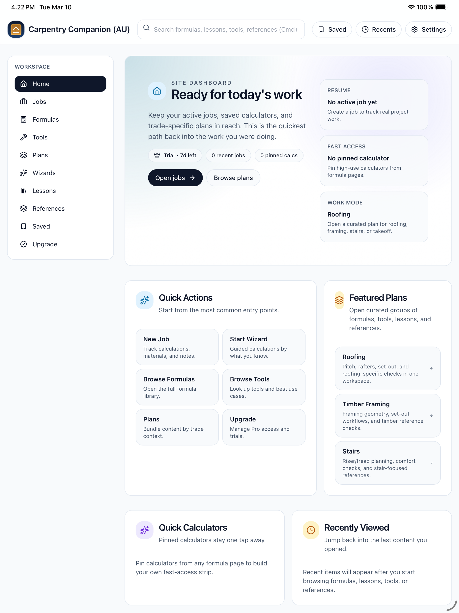

Static-first stack
GitHub Pages, plain HTML/CSS/JS, and small data files keep the site fast and easy to maintain.
Personal HQ
I build AI-assisted apps, local LLM experiments, and lightweight products that feel premium, useful, and easy to keep alive.
Static-first stack
GitHub Pages, plain HTML/CSS/JS, and small data files keep the site fast and easy to maintain.
Shipping product surface
Carpentry Companion (AU) now has product, support, and privacy pages live in a public static workflow.
Auto-synced portfolio
Public repos update the projects page, and product folders flow into a generated product catalog.
Experiments with a point
Local AI, calm automations, Godot feel studies, and travel capture systems all feed back into shipped work.
Product Spotlight
An offline-first app for Australian carpentry study, job planning, calculators, and reference workflows.

Built a reusable support, privacy, marketing, and product-detail structure that can scale across future apps without introducing a heavy CMS.
Turned a plain GitHub Pages site into a premium personal HQ with theme control, feed integration, product cataloging, and room to grow.
Kept the stack intentionally boring: simple files, small scripts, graceful fallbacks, and automation only where it clearly removes maintenance.
Tools that reduce cognitive load and make complex workflows feel simple.
Private, offline-friendly systems for notes, search, and summaries.
Small scripts that remove friction and keep systems resilient.
Feel-first interactions and micro-worlds for UX exploration.
Static-first builds that load fast and stay maintainable.
Systems for collecting routes, maps, and observations.
When a product needs to work on-site or on the road, local storage and graceful failure handling stop being "nice to have" and become the product.
The easiest way to make software feel expensive is usually subtraction: cleaner spacing, clearer hierarchy, tighter actions, and fewer dead-end decisions.
The useful local-model workflows are the unglamorous ones: short private tasks, narrow context, and outputs that can be checked quickly.
Added Notes, Lab, and Uses pages plus a denser homepage with proof, product spotlight, wins, and a changelog rhythm.
Introduced palette switching with multiple dark-mode directions so the site can feel different without changing the code structure.
Integrated the Carpentry Companion handoff package, wired the blog feed, and kept the product catalog updating from folder metadata.
Private summarisation, retrieval, and narrow workflow experiments that stay small enough to verify.
An offline-first notes system for routes, observations, maps, and short travel signals that deserve to be kept.
Workflow glue for publishing, syncing, and keeping the boring infrastructure parts out of the way.